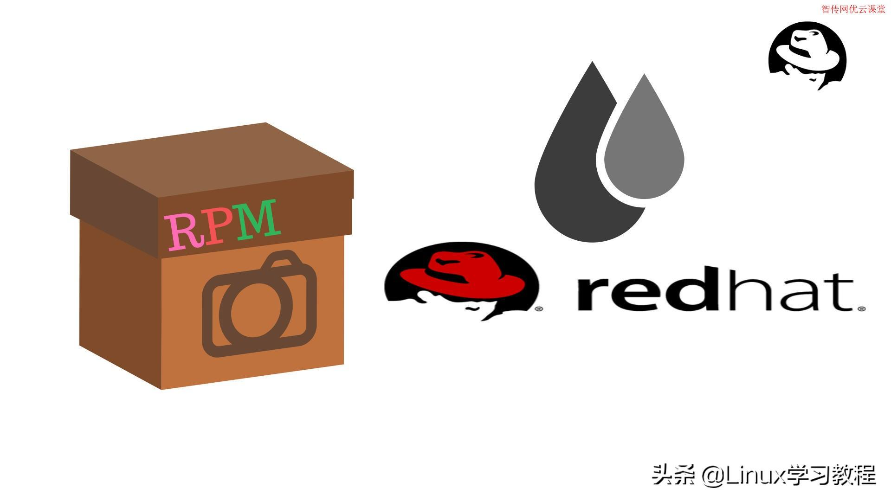
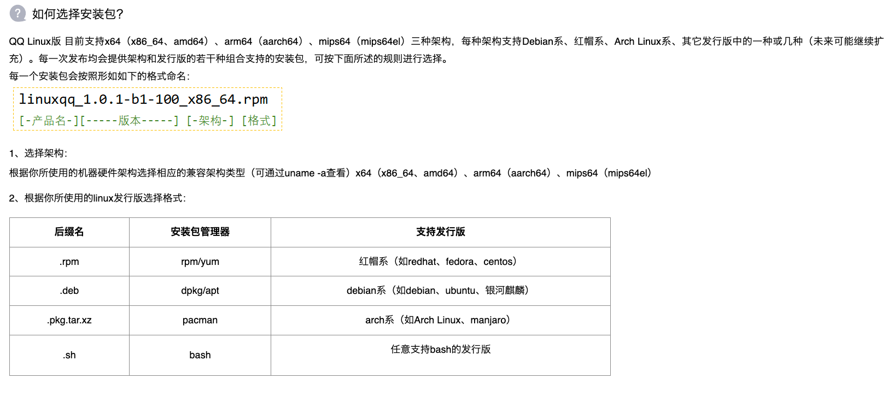
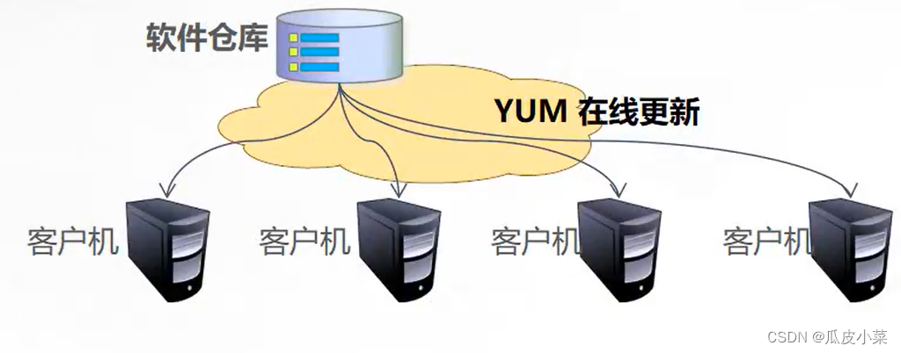
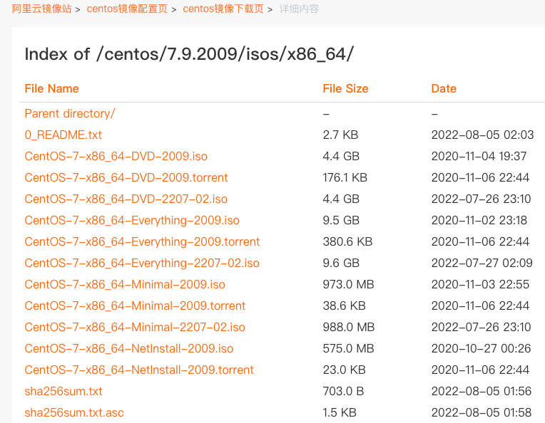
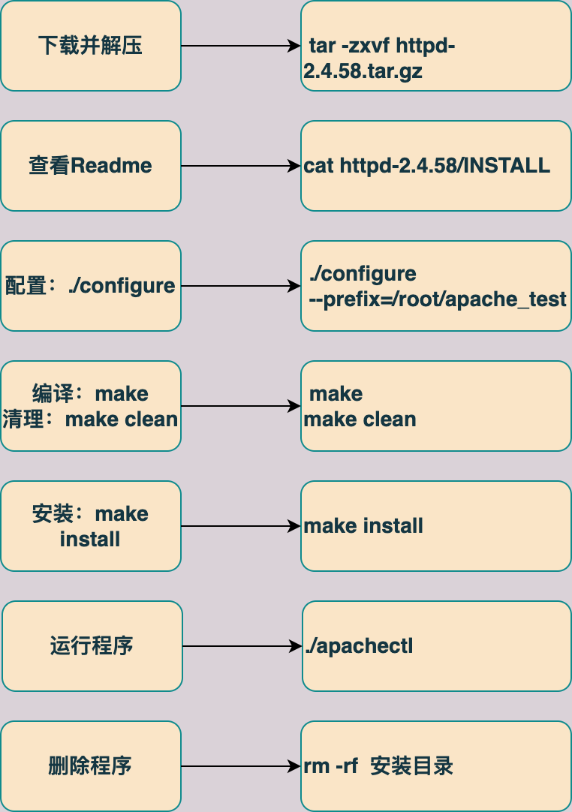
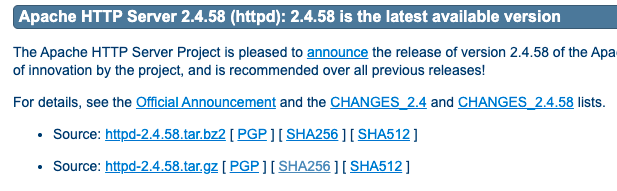
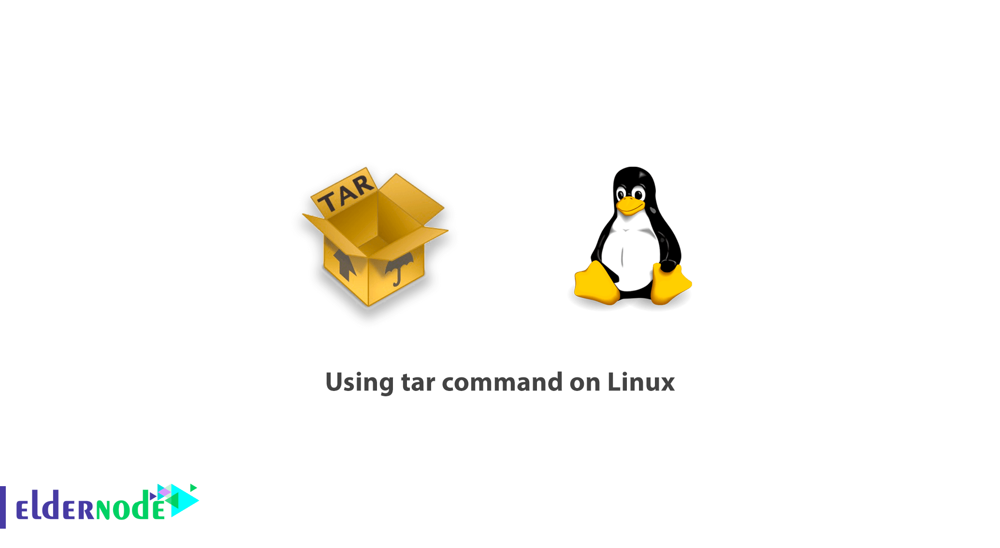

第9章 Linux软件安装0、网页里面的电脑博物馆1、RPM软件包管理器（1）rpm用法举例（2）常用rpm包站点2、DNF管理软件包（1）yum（2）dnf3、源代码方式安装软件（1）验证一个文件是否被篡改（2）源代码安装软件举例3、Linux打包和压缩（1）归档和打包程序tar（2）压缩命令gzip（3）压缩命令bzip2（4）压缩命令xz
可以看到各种老式的经典电脑
《高山流水》
rpm软件包管理器（red hat package manager）是一种开放的软件包管理系统，可以运行在各种Linux系统上。rpm简化了Linux系统安装、卸载、更新和升级的过程。对于开发者来说，rpm允许把软件包装成源码包和程序包。 Linux系统上所有软件都可以被分成可被安装、升级或卸载的rpm软件包。
QQ Linux版-从心出发·趣无止境 以安装QQ为例。
RPM是”Redhat Package Manager”的缩写，根据名字也能猜到这是Redhat公司开发出来的。RPM 是以一种数据库记录的方式来将你所需要的套件安装到你的Linux 主机的一套管理程序。也就是说，你的linux系统中存在着一个关于RPM的数据库，它记录了安装的包以及包与包之间依赖相关性。RPM包是预先在linux机器上编译好并打包好的文件，安装起来非常快捷。但是也有一些缺点，比如安装的环境必须与编译时的环境一致或者相当；包与包之间存在着相互依赖的情况；卸载包时需要先把依赖的包卸载掉，如果依赖的包是系统所必须的，那就不能卸载这个包，否则会造成系统崩溃。


x1#rpm [选项] [rpm软件包文件名称] 2[root@localhost examplesh]# rpm --help3[root@localhost examplesh]# wget --help4GNU Wget 1.21.1，非交互式的网络文件下载工具。5用法： wget [选项]... [URL]...6[root@localhost examplesh]# wget https://down.qq.com/qqweb/LinuxQQ/linuxqq_2.0.0-b2-1089_aarch64.rpm7
8
9例：运用rpm包安装、查询和卸载QQ10#安装rpm -ivh11[root@bogon ~]# rpm -ivh linuxqq_2.0.0-b2-1089_aarch64.rpm12#查询rpm -q13[root@bogon ~]# rpm -q linuxqq14#删除rpm -e15[root@bogon ~]# rpm -e linuxqq16例：升级和刷新软件包：17#升级软件包18[root@bogon ~]# rpm -Uvh linuxqq_2.0.0-b2-1089_aarch64.rpm 19#刷新软件包20[root@bogon ~]# rpm -Fvh linuxqq_2.0.0-b2-1089_aarch64.rpm21#查询软件包的依赖关系22[root@localhost ~]# rpm -qR linuxqq23
xxxxxxxxxx131例：查询已经安装的所有软件包2[root@bogon ~]# rpm -ivh linuxqq_2.0.0-b2-1089_aarch64.rpm3#查看系统里面安装的所有的软件包4[root@bogon ~]# rpm -qa5例：查询rpm软件包的依赖关系6[root@bogon ~]# rpm -qR linuxqq7
8例：查询软件包所包含的文件列表9[root@bogon ~]# rpm -ql linuxqq10
11例：查询文件属于哪一个软件包12[root@bogon ~]# rpm -qf /usr/local/lib/tencent-qq/13linuxqq-2.0.0-b2.aarch64
以下是一些重要的rpm站点，应该可以找到几乎所有的rpm软件包。
注意：
rpm有两个缺点：
- 第一个是有依赖关系需要自己手动解决。
- 第二个是rpm和具体的Linux发行版有关系，不通用。
yum可以实现自动化的升级、安装和删除软件，检查依赖性并且一次安装所有依赖的软件包。
yum需要配置软件仓库。

仓库文件的配置存储在/etc/yum.repos.d目录中。
xxxxxxxxxx41[root@bogon ~]# ls /etc/yum.repos.d/2CentOS-aarch64-kernel.repo CentOS-Debuginfo.repo CentOS-Sources.repo3CentOS-Base.repo CentOS-fasttrack.repo CentOS-Vault.repo4CentOS-CR.repo CentOS-Media.repoxxxxxxxxxx81[base]2name=CentOS-$releasever - Base //定义了软件仓库的名称3//指定了rpm软件包的来源支持的协议有ftp http file本地仓库文件,可以利用本地光盘建立仓库。4mirrorlist=http://mirrorlist.centos.org/?release=$releasever&arch=$basearch&repo=os&infra=$infra5gpgcheck=1 //1表示启用软件仓库源6//定义用于校验的gpg密钥7gpgkey=file:///etc/pki/rpm-gpg/RPM-GPG-KEY-CentOS-78 file:///etc/pki/rpm-gpg/RPM-GPG-KEY-CentOS-7-aarch641、第一种来自网络的yum仓库
正常的安装系统以后，yum仓库已经配置好了，如果需要添加其他的源，可以参考如下的网站。
国内常用的yum仓库：
阿里巴巴开源镜像站-OPSX镜像站-阿里云开发者社区 (aliyun.com)
清华大学开源软件镜像站 | Tsinghua Open Source Mirror
Extra Packages for Enterprise Linux (EPEL) :: Fedora Docs (fedoraproject.org)
具体的配置方法参考各个网站。
2、第二种是本地自建yum仓库
使用光盘自建仓库。
YUM命令：
xxxxxxxxxx111//安装软件2[root@bogon ~]# yum -y install bind3//查询4[root@bogon ~]# yum info bind5[root@bogon ~]# yum info installed6//查看依赖关系7[root@bogon ~]# yum deplist bind8//查看软件仓库配置9[root@bogon ~]# yum repolist10//删除软件11[root@bogon ~]# yum remove binddnf 安装cockpit举例
xxxxxxxxxx301#先搜索某一个软件2[root@localhost ~]# dnf search cockpit3上次元数据过期检查：0:49:54 前，执行于 2023年11月10日 星期五 09时33分29秒。4==================================== 名称 精准匹配：cockpit =====================================5cockpit.aarch64 : Web Console for Linux servers6
7
8#安装该软件9[root@localhost ~]# dnf isntall cockpit10#查询该软件的详细信息11[root@localhost ~]# dnf info cockpit12上次元数据过期检查：0:50:51 前，执行于 2023年11月10日 星期五 09时33分29秒。13已安装的软件包14名称 : cockpit15版本 : 286.216 17#删除一个软件18[root@localhost ~]# dnf remove cockpit19
20#列出所有已经安装的软件21[root@localhost ~]# dnf list installed22
23#找出该软件的依赖关系24[root@localhost ~]# dnf deplist cockpit25上次元数据过期检查：0:55:42 前，执行于 2023年11月10日 星期五 09时33分29秒。26package: cockpit-286.1-1.el9.aarch6427 dependency: cockpit-bridge28
29#清除缓存 30[root@localhost ~]# dnf clean
从网络上下载的文件如何验证其有没有被篡改过？
例如：
centos-7.9.2009-isos-x86_64安装包下载_开源镜像站-阿里云 (aliyun.com)

可以下载这里的sha256sum.txt，该文件内容的如下：
校验码：689531cce9cf484378481ae762fae362791a9be078fda10e4f6977bf8fa71350
文件名：CentOS-7-x86_64-Everything-2009.iso
xxxxxxxxxx111centos-7.9.2009-isos-x86_64安装包下载_开源镜像站-阿里云 (aliyun.com)2[root@localhost examplesh]# sha1sum --help3用法：sha1sum [选项]... [文件]...4[root@localhost examplesh]# md5sum --help5用法：sha1sum [选项]... [文件]...6[root@localhost examplesh]# sha256sum --help7用法：sha256sum [选项]... [文件]...8#计算一个文件的指纹9[root@localhost examplesh]# sha256sum linuxqq_2.0.0-b2-1089_aarch64.rpm104e844005bf4f615f8fa1637c9dd6d0dcef3cd4ed8224c4831515d158f2ad27c5 linuxqq_2.0.0-b2-1089_aarch64.rpm11

用源代码的方式安装apahce服务器：（为了演示方便，httpd-2.4.58.tar.gz已经下载至/root目录内）
到该网站找到最新的apache版本：Download - The Apache HTTP Server Project

（1）下载源代码文件
xxxxxxxxxx191#下载apache的源代码2[root@localhost ~]$ wget https://dlcdn.apache.org/httpd/httpd-2.4.58.tar.gz3#下载源代码的指纹4[root@localhost ~]# wget https://downloads.apache.org/httpd/httpd-2.4.58.tar.gz.sha5125#查看指纹6[root@localhost ~]# cat httpd-2.4.58.tar.gz.sha51275c11faf0572035ef67b27775d975999411c689cb774553175299a9e99b63d3d7138b0c7f15048ec28038494d8513689f916202c2289d557947d8b190d46ca9f3 *httpd-2.4.58.tar.gz8#使用加密算法计算指纹，和下载的指纹进行比对。9[root@localhost ~]# sha512sum httpd-2.4.58.tar.gz105c11faf0572035ef67b27775d975999411c689cb774553175299a9e99b63d3d7138b0c7f15048ec28038494d8513689f916202c2289d557947d8b190d46ca9f3 httpd-2.4.58.tar.gz11#解压缩12[root@localhost ~]# tar -zxvf httpd-2.4.58.tar.gz13[root@localhost ~]# ls14anaconda-ks.cfg file1 httpd-2.4.58.tar.gz.sha512 test_lv15dir httpd-2.4.58 jcameron-key.asc test.sh16examplesh httpd-2.4.58.tar.gz raid17
18#进入该目录19[root@localhost ~]# cd httpd-2.4.58/（2）进行配置
安装前首先查看安装说明：
1[root@localhost ~]# cat httpd-2.4.58/INSTALL2
3 APACHE INSTALLATION OVERVIEW4
5 For complete installation documentation, see [ht]docs/manual/install.html or6 http://httpd.apache.org/docs/2.4/install.html7
8 $ ./configure --prefix=PREFIX9 $ make10 $ make install11 $ PREFIX/bin/apachectl start开始具体的安装步骤：
1#./configure 软件配置与检查 抓药完成以下三个任务：2#第一：监测环境是否符合安装要求3#第二：定义需要的功能选项。通过./configure--prefix=安装路径，可以指定安装目录。4#可以使用./configure --help 查看支持的具体功能选项5#第三：把系统环境的监测结果和定义好的功能选项写入makefile文件。6[root@localhost httpd-2.4.58]# mkdir /root/apache_test7
8#进行配置9[root@localhost httpd-2.4.58]# ./configure --prefix=/root/apache_test10...省略11checking for APR... no12#第一次出错。13configure: error: APR not found. Please read the documentation.14
15#解决方法16[root@localhost httpd-2.4.58]# dnf install apr*17
18#再次进行配置19[root@localhost httpd-2.4.58]# ./configure --prefix=/root/apache_test20checking for -pcre2-config... no21checking for -pcre-config... no22checking for pcre2-config... no23checking for pcre-config... no24#这里继续报错25configure: error: pcre(2)-config for libpcre not found. PCRE is required and available from http://pcre.org/26[root@localhost httpd-2.4.58]# dnf install pcre*27
28#再次配置，成功29[root@localhost httpd-2.4.58]# ./configure --prefix=/root/apache_test30...省略31config.status: executing default commands32configure: summary of build options:33
34 Server Version: 2.4.5835 Install prefix: /root/apache_test36 C compiler: gcc37 CFLAGS:38 CPPFLAGS: -DLINUX -D_REENTRANT -D_GNU_SOURCE39 LDFLAGS:40 LIBS:41 C preprocessor: gcc -E42
（3）make编译
xxxxxxxxxx21#安装apache2[root@localhost httpd-2.4.58]# make install（4）make install安装
xxxxxxxxxx21#安装apache2[root@localhost httpd-2.4.58]# make install（5）安装后运行程序
xxxxxxxxxx161#进入安装目录2[root@localhost ~]# cd /root/apache_test/3[root@localhost apache_test]# ls4bin build cgi-bin conf error htdocs icons include logs man manual modules5[root@localhost apache_test]# cd bin6[root@localhost bin]# ls7ab apxs dbmmanage envvars-std htcacheclean htdigest httpd logresolve8apachectl checkgid envvars fcgistarter htdbm htpasswd httxt2dbm rotatelogs9
10#运行apache可执行程序11[root@localhost bin]# ./apachectl12AH00558: httpd: Could not reliably determine the server's fully qualified domain name, using localhost.localdomain. Set the 'ServerName' directive globally to suppress this message13#查看是否开启80号端口，服务运行成功14[root@localhost bin]# netstat -atunpl |grep :8015tcp6 0 0 :::80 :::* LISTEN 38878/httpd16
（6）删除这个程序
xxxxxxxxxx31#删除该目录，即可删除apache程序。2[root@localhost ~]# cd ~3[root@localhost ~]# rm -rf apache_test/

xxxxxxxxxx51[root@bogon ~]# mkdir abc2[root@bogon ~]# tar -cvf /root/abc.tar /root/abc //打包3[root@bogon ~]# tar -tvf /root/abc.tar /root/abc //查看包4[root@bogon ~]# tar -xvf /root/abc.tar /root/abc //解开包5[root@bogon ~]# tar rvf /root/abc.tar /root/abc/d //把文件d追加进包中 程序员需要了解的硬核知识之压缩算法-今日头条 (toutiao.com)
90 岁程序员：他的压缩算法改变了世界-今日头条 (toutiao.com)
xxxxxxxxxx451#第一个例子：打包并比较两个文件的大小。2#创建一个100M的文件3[root@localhost test]# dd if=/dev/zero of=100Mfile bs=1M count=1004记录了100+0 的读入5记录了100+0 的写出6104857600字节（105 MB，100 MiB）已复制，0.127655 s，821 MB/s7[root@localhost test]# ls -lh8总用量 100M9-rw-r--r-- 1 root root 100M 11月 27 19:18 100Mfile10#对该文件进行打包11[root@localhost test]# tar -cvf my.tar 100Mfile12100Mfile13#比较一下文件的体积有没有发生变化14[root@localhost test]# ls -lh 100Mfile my.tar15-rw-r--r-- 1 root root 100M 11月 27 19:18 100Mfile16-rw-r--r-- 1 root root 101M 11月 27 19:19 my.tar17
18#第二个例子：打包并使用gzip进行压缩19[root@localhost test]# tar -zcvf my.tar.gz 100Mfile20100Mfile21[root@localhost test]# ls -lh22总用量 201M23-rw-r--r-- 1 root root 100M 11月 27 19:18 100Mfile24-rw-r--r-- 1 root root 101M 11月 27 19:19 my.tar25-rw-r--r-- 1 root root 100K 11月 27 19:20 my.tar.gz26
27#第三个例子：打包并使用bzip2进行压缩28[root@localhost test]# tar -jcvf my.tar.bz2 100Mfile29100Mfile30[root@localhost test]# ll -h31总用量 201M32-rw-r--r-- 1 root root 100M 11月 27 19:18 100Mfile33-rw-r--r-- 1 root root 101M 11月 27 19:19 my.tar34-rw-r--r-- 1 root root 195 11月 27 19:27 my.tar.bz235
36#第四个例子：打包并使用xz进行压缩37[root@localhost test]# tar -Jcvf my.tar.xz 100Mfile38100Mfile39[root@localhost test]# ll -h40总用量 201M41-rw-r--r-- 1 root root 100M 11月 27 19:18 100Mfile42-rw-r--r-- 1 root root 101M 11月 27 19:19 my.tar43-rw-r--r-- 1 root root 195 11月 27 19:27 my.tar.bz244-rw-r--r-- 1 root root 100K 11月 27 19:20 my.tar.gz45-rw-r--r-- 1 root root 16K 11月 27 19:30 my.tar.xzxxxxxxxxxx31[root@bogon ~]# tar -zcvf /root/abc.tar.gz /root/abc2[root@bogon ~]# tar -ztvf /root/abc.tar.gz 3[root@bogon ~]# tar -zxvf /root/abc.tar.gzxxxxxxxxxx31[root@bogon ~]# tar -jcvf /root/abc.tar.bz2 /root/abc2[root@bogon ~]# tar -jtvf /root/abc.tar.bz2 3[root@bogon ~]# tar -jxvf /root/abc.tar.bz2xxxxxxxxxx31[root@bogon ~]# tar -Jcvf /root/abc.tar.xz /root/abc2[root@bogon ~]# tar -Jtvf /root/abc.tar.xz3[root@bogon ~]# tar -Jxvf /root/abc.tar.xz第9章 Linux软件安装0、网页里面的电脑博物馆1、RPM软件包管理器（1）rpm用法举例（2）常用rpm包站点2、DNF管理软件包（1）yum（2）dnf3、源代码方式安装软件（1）验证一个文件是否被篡改（2）源代码安装软件举例3、Linux打包和压缩（1）归档和打包程序tar（2）压缩命令gzip（3）压缩命令bzip2（4）压缩命令xz